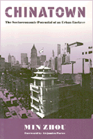

<body bgcolor="#FFFFFF" text="#000000" link="#0000FF" vlink="#CC0000" alink="#CC0000"><center><hr width="350" size="1" align="center" noshade>Ethnic enclaves as an alternative means of incorporation into the larger society<hr width="350" size="1" align="center" noshade><p><a href="https://cdcshoppingcart.uchicago.edu/Cart/ChicagoBook.aspx?ISBN=9780877229346&&PRESS=temple" target="_top">Buy this book!</a> | <a href="https://cdcshoppingcart.uchicago.edu/Cart/Cart.aspx?PRESS=temple" target="_top">View Cart</a> | <a href="https://cdcshoppingcart.uchicago.edu/Cart/Cart.aspx?PRESS=temple" target="_top">Check Out</a></p><p></p></center><!--none//--><h1>Chinatown</h1>
<H2>The Socioeconomic Potential of an Urban Enclave</H2>
<h3>Min Zhou, foreword by Alejandro Portes</h3>
<P>cloth 0-87722-934-1 $74.50, May 92, <FONT COLOR=#990033>Out of Stock Unavailable</FONT>
<br>paper 1-56639-337-X $33.95, Feb 95, <FONT COLOR=#990033>Available</FONT>
<br>Electronic Book 1-43990-417-0 $33.95 <FONT COLOR=#990033>Out of Stock Unavailable</FONT>
<BR> 316 pp
6x9
</P><h3 align="center"><P><font color="#996633">Honorable Mention Robert E. Park Award, American Sociological Association,
1993</font></P>
</H3>
<BLOCKQUOTE><I>"This book provides a well-written and fascinating picture of the positive face of Chinatown as an economic enclave that provides an alternative path for immigrants to succeed in American without losing their strong ethnic identity and ocmmunity....The author provides an excellent account of the historical and structural factors that have led to the formation and continuation of Chinatown as an urban enclave since the post-1965 Chinese immigration period."</I>
<br>&#151<b><I>Social Science Quarterly</I></b><I></I></BLOCKQUOTE>
<p>Min Zhou examines how an ethnic enclave works to direct its members into American society, while at the same time shielding them from it. Focusing specifically on New York's Chinatown, a community established more than a century ago, Zhou offers a thorough and modern treatment of the enclave as a socioeconomic system, distinct form, but intrinsically linked with, the larger society.
<p>Zhou's central theme is that Chinatown does not keep immigrant Chinese from assimilating into mainstream society, but instead provides an alternative means of incorporation into society that does not conflict with cultural distinctiveness. Concentrating on the past two decades, Zhou maintains that community networks and social capital are important resources for reaching socioeconomic goals and social positions in the United States; in Chinatown, ethnic employers use family ties and ethnic resources to advance socially. Relying on her family's networks in New York's Chinatown and her fluency in both Cantonese and Mandarin, the author, who was born in the People's Republic of China, makes extensive use of personal interviews to present a rich picture of the daily work life in the community. She demonstrates that for many immigrants, low-paid menial jobs provide by the enclave are expected as a part of the time-honored path to upward social mobility of the family.
<BR>&nbsp;<h2>Reviews</h2>
<p><I>"</I>Chinatown<I> is a captivating story of East meeting West in greater New York City."</I>
<br>&#151<b><I>American Journal of Sociology</I></b>
<BR>&nbsp;<h2>Contents</h2><P>
<p>List of Figures
<br>List of Tables
<br>Foreword
<br>Preface
<br>Acknowledgments
<br>1. Introduction
<br>2. Memories of Sojourning
<br>3. Changes in Recent Chinese Immigration
<br>4. Uprooted: The New Arrivals
<br>5. The Rise of the Economic Enclave
<br>6. The Ethnic Labor Force and Its Labor Market Experience
<br>7. The Other Half of the Sky: Socioeconomic Adaptation of Immigrant Women
<br>8. Residential Mobility and Ethnic Segregation
<br>9. Conclusion: Rising Out of Chinatown
<br>Notes
<br>References
<br>Index
</P><BR>&nbsp;<H2>About the Author(s)</H2>
<table><tr><td valign="top"><img src="/tempress/authors/818_au1.gif" height="90" width="75"></td><td width="100%" valign="middle"><p><b>Min Zhou</b> is Assistant Professor in the Department of Sociology at Louisiana State University in Baton Rouge.</P></td></tr></table>
<BR><H2>Subject Categories</H2>
<p><A HREF="/tempress/race.html" TARGET="_top">Race and Ethnicity</a>
<BR><A HREF="/tempress/asian_amer.html" TARGET="_top">Asian American Studies</a>
</p>
<BR><h2 class="inpageheading">In the series</H2>
<P><I><a href="http://www.temple.edu/tempress/conflicts.html" onMouseOver="window.status='Click for other books in this series!'; return true;" onMouseOut="window.status=''; return true;" target="_top">Conflicts in Urban and Regional Development</a></i>, edited by John R. Logan and Todd Swanstrom.
</p><p><i>Conflicts in Urban and Regional Development</i>, edited by John R. Logan and Todd Swanstrom, includes books on urban policy and issues of city and regional planning, accounts of the political economy of individual cities, and books that compare policies across cities and countries.</p>
<p align="center"><a href="https://cdcshoppingcart.uchicago.edu/Cart/ChicagoBook.aspx?ISBN=9780877229346&&PRESS=temple" target="_top">Buy this book!</a> | <a href="https://cdcshoppingcart.uchicago.edu/Cart/Cart.aspx?PRESS=temple" target="_top">View Cart</a> | <a href="https://cdcshoppingcart.uchicago.edu/Cart/Cart.aspx?PRESS=temple" target="_top">Check Out</a></p><p><font face="Arial" size="1"><a href="copyright.html" onMouseOver="window.status='Web Copyright Policy';return true;" onMouseOut="window.status=''" title="Web Copyright Policy">&copy;</a> 2015 <a href="http://www.temple.edu" target="new" onMouseOver="window.status='Link to Temple University home page';return true;" onMouseOut="window.status=''" title="Link to Temple University home page">Temple University</a>. All Rights Reserved. http://www.temple.edu/tempress/titles/818_reg.html</font></p>